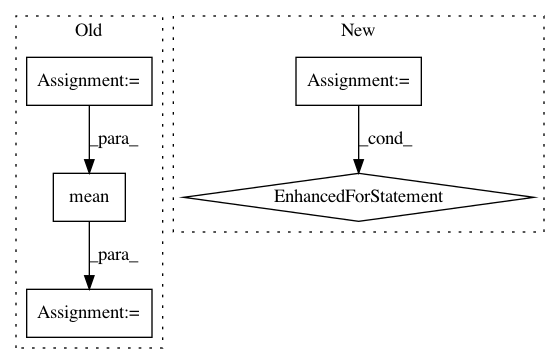

14d9448978c808b4b86e5b3429d7649485782568,entity2rec/ItemKNNSImilarity.py,ItemKNNSimilarity,__init__,#ItemKNNSimilarity#,16
Before Change
self.model = self.learn_model_surprise()
self.sim_matrix = self.model.compute_similarities()
self.avg_s = np.mean(self.sim_matrix)
def learn_model_surprise(self):
file_path = os.path.expanduser(self.train)
After Change
self.dataset = dataset
data = tc.SFrame.read_csv("datasets/"+"%s/FM/" %self.dataset
+"train.dat", delimiter=" ")
if implicit:
self.model = tc.item_similarity_recommender.create(data,
user_id="user_id", item_id="item_id")
else:
self.model = tc.item_similarity_recommender.create(data,
user_id="user_id", item_id="item_id", target="rating")
similarities = self.model.get_similar_items()
self.sim_matrix = {}
for s in similarities:
self.sim_matrix[s["item_id"], s["similar"]] = s["score"]
def collab_similarities(self, item_1, item_2):
try:
In pattern: SUPERPATTERN
Frequency: 3
Non-data size: 5
Instances
Project Name: D2KLab/entity2rec
Commit Name: 14d9448978c808b4b86e5b3429d7649485782568
Time: 2018-11-15
Author: enricopalumbo0@gmail.com
File Name: entity2rec/ItemKNNSImilarity.py
Class Name: ItemKNNSimilarity
Method Name: __init__
Project Name: Scitator/catalyst
Commit Name: f4beaac559e00a3676d942dc7e8fea69efc01cfe
Time: 2020-11-30
Author: raveforlive@gmail.com
File Name: catalyst/metrics/avg_precision.py
Class Name:
Method Name: mean_avg_precision
Project Name: biocore/scikit-bio
Commit Name: 30d73c7518adcde7ed8340d76e306bd290e0949a
Time: 2016-06-07
Author: gregcaporaso@gmail.com
File Name: skbio/stats/composition.py
Class Name:
Method Name: ancom